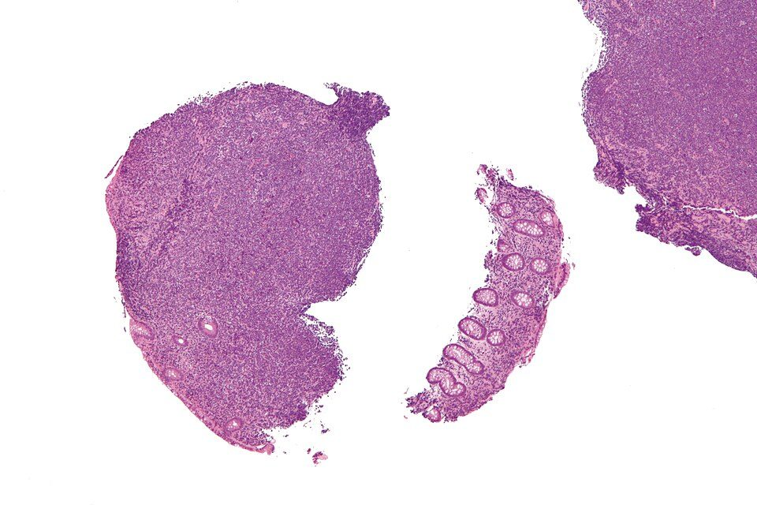

Información divulgativa. No sustituye la valoración de tu equipo médico ni sirve para decidir un tratamiento.


En resumen
| Frecuencia | 5-10 % de los linfomas no Hodgkin |
| Tipos | Extraganglionar (MALT), esplénico y ganglionar |
| Causas asociadas | H. pylori (estómago), hepatitis C (esplénico), Sjögren (salivales), tiroiditis de Hashimoto, Chlamydia psittaci (órbita) |
| Tratamiento | Tratar la infección; radioterapia; rituximab; inhibidores de BTK |
Tipos
- MALT: en mucosas; el más común es el gástrico. En los positivos para H. pylori, la erradicación con antibióticos cura la mayoría.
- Esplénico: bazo grande y linfocitos en sangre; esplenectomía o rituximab; antivirales si hay hepatitis C.
- Ganglionar: se trata como el folicular.
Tratamiento
Radioterapia a dosis bajas en localizados; rituximab solo o con quimioterapia; zanubrutinib y otros inhibidores de BTK en recaídas.
Ver también: Linfomas, Linfoma folicular, Cáncer de estómago y esófago.
Historia · Medicapedia
Linfomas de la zona marginal en la historia de la medicina
Cómo se descubrió, quién lo investigó y cómo cambió su tratamiento a lo largo de los siglos, contado en Medicapedia, nuestra web hermana de historia de la medicina.
Leer la historia en Medicapedia ↗Fuentes
- Zucca E, et al. Marginal zone lymphomas: ESMO Clinical Practice Guidelines. Ann Oncol. 2020;31:17-29. doi:10.1016/j.annonc.2019.10.010
- Wotherspoon AC, et al. Regression of primary low-grade B-cell gastric lymphoma of MALT type after eradication of Helicobacter pylori. Lancet. 1993;342:575-577. doi:10.1016/0140-6736(93)91409-F